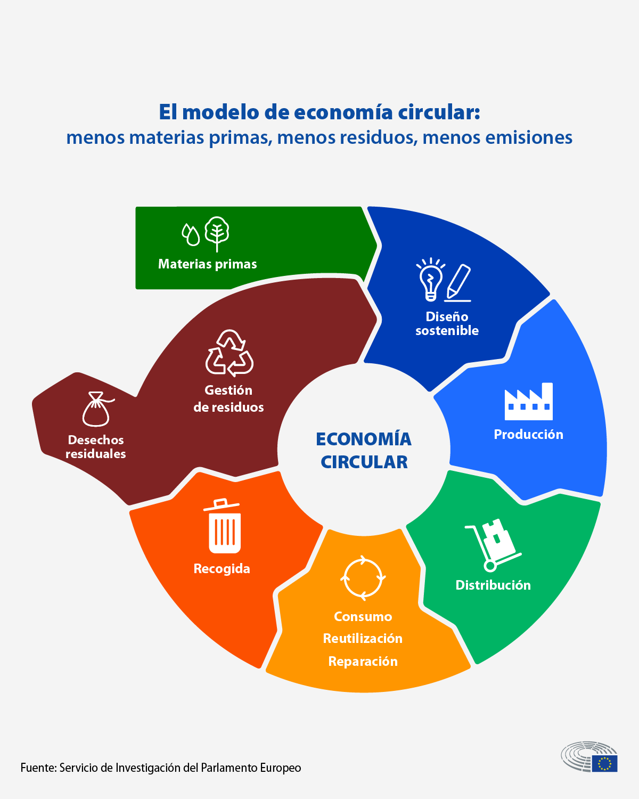

RA2 – Tecnologies Habilitadores Digitals (THD)¶
Identificació i descripció de les Tecnologies Habilitadores Digitals (THD)¶
Les tecnologies habilitadores digitals (THD) permeten transformar les empreses tradicionals en organitzacions més intel·ligents, connectades i sostenibles.
Són la base de la Indústria 4.0 i de la digitalització dels serveis, afavorint la competitivitat i l’adaptació a mercats globals canviants.
Principals THD¶
| Tecnologia | Descripció | Aplicacions clau |
|---|---|---|
| Intel·ligència Artificial (IA) | Permet a les màquines aprendre i prendre decisions autònomes mitjançant algoritmes i dades. | Assistents virtuals, manteniment predictiu, personalització de serveis, detecció de frau. |
| Big Data | Gestió i anàlisi de grans volums de dades per obtenir coneixement i millorar la presa de decisions. | Segmentació de clients, anàlisi de mercat, predicció de tendències, optimització logística. |
| Cloud Computing | Emmagatzematge i processament de dades al núvol, permetent escalar recursos i reduir costos. | ERP i CRM al núvol, e-commerce, col·laboració remota, IA com a servei. |
| Internet of Things (IoT) | Connexió d’objectes físics a internet per recollir i transmetre dades en temps real. | Sensors en logística, control d’inventari, manteniment remot, agricultura de precisió. |
| 5G | Xarxa mòbil d’alta velocitat que permet comunicacions instantànies i connexions massives de dispositius. | Vehicles autònoms, drons, fàbriques connectades, telemedicina. |
| Ciberseguretat | Conjunt de mesures i protocols per protegir dades i sistemes digitals. | Encriptació, control d’accessos, seguretat en el núvol i en dispositius IoT. |
| Blockchain i DLT (Distributed Ledger Technologies) | Tecnologies de registre distribuït que garanteixen la traçabilitat i la transparència de les transaccions. | Criptomonedes, contractes intel·ligents, logística, traçabilitat alimentària. |
Relació de les THD amb el desenvolupament de productes i serveis sostenibles i eficients¶
Les THD impulsen l’eficiència energètica, la reducció d’emissions i la innovació verda, contribuint a un model econòmic més sostenible.
|
 |
Economia circularL’economia circular és un model econòmic que busca reduir el malbaratament de recursos i minimitzar l’impacte ambiental mantenint els materials i productes en ús durant el màxim temps possible. En lloc del model tradicional “produir, usar i llençar”, l’economia circular promou reutilitzar, reparar, reciclar i repensar els processos productius per aconseguir una sostenibilitat econòmica i ecològica a llarg termini. |
Relacions clau¶
| Tecnologia | Contribució a la sostenibilitat i eficiència |
|---|---|
| IA | Optimitza processos productius i logístics reduint consums energètics i emissions. |
| Big Data | Permet decisions basades en dades per gestionar millor els recursos naturals i materials. |
| Cloud Computing | Redueix la necessitat d’infraestructures físiques i promou l’ús compartit d’energia eficient. |
| IoT | Facilita el control ambiental, el reg intel·ligent i la gestió de residus. |
| 5G | Millora la connectivitat d’eines remotes i sistemes de monitoratge amb baix consum energètic. |
| Ciberseguretat | Garanteix un ús responsable i protegit de les dades en entorns digitals sostenibles. |
| Blockchain/DLT | Permet la traçabilitat en cadenes de subministrament i certifica processos sostenibles. |
Nous sectors i mercats sorgits gràcies a les THD¶
L’expansió de les THD ha donat lloc a nous models econòmics i àrees de negoci, que generen ocupació i afavoreixen la innovació.
| Nova àrea o sector | Descripció | Exemple |
|---|---|---|
| Economia de dades | Creació de valor mitjançant l’anàlisi i comercialització de dades. | Google Data Cloud, NielsenIQ. |
| Indústria 4.0 | Integració de sistemes físics i digitals en la producció. | Fàbriques connectades, robots col·laboratius. |
| Comerç digital intel·ligent | Plataformes de venda online basades en IA i Big Data. | Amazon, Shopify, Zalando. |
| Smart Cities | Ciutats connectades amb IoT, Big Data i 5G per gestionar mobilitat i energia. | Barcelona, Amsterdam, Singapur. |
| Fintech i Insurtech | Serveis financers digitals amb Blockchain i IA. | Revolut, N26, Lemonade. |
| Agrotech | Agricultura de precisió amb sensors, dades i automatització. | John Deere, Agroptima. |
| Greentech i Enertech | Innovacions en energia renovable, emmagatzematge i eficiència. | Tesla Energy, Iberdrola Smart Solar. |
Conclusió¶
Les tecnologies habilitadores digitals actuen com a motor del canvi econòmic, ambiental i social.
La seva aplicació permet a les empreses ser més eficients, transparents i sostenibles, i alhora obrir nous mercats i professions digitals.
Activitat de Recerca: Agrotech, comerç internacional i sostenibilitat¶
Objectiu: Comprendre com les tecnologies habilitadores estan transformant el sector primari i impulsant un model agrícola més sostenible i competitiu.
Instruccions de recerca:
-
Analitza les webs Agrotech i Comerç internacional
-
Llista quines tecnologies utilitzen (IoT, Big Data, IA, Blockchain, 5G...).
-
Analitza i cerca informació sobre els següents punts per elaborar un mapa conceptual
- La productivitat agrícola.
- L’eficiència en l’ús de recursos naturals.
- La traçabilitat i seguretat alimentària.
- L’Internacionalització més àgil i accessible
- L’Eficiència en la gestió logística i documental
- La Millora de la competitivitat i personalització de serveis